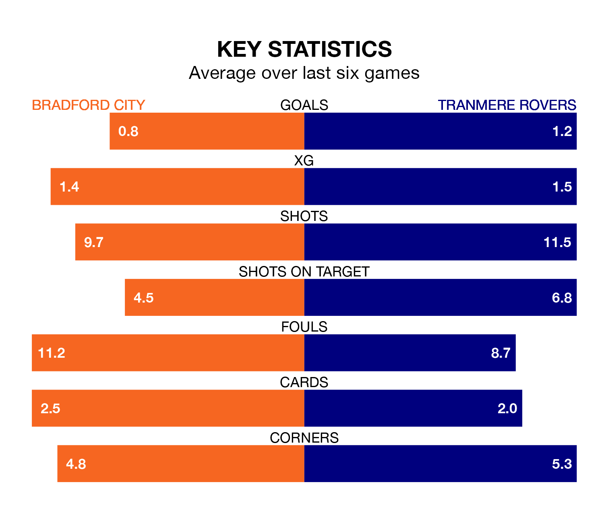

Bradford City welcome Tranmere Rovers to the University of Bradford Stadium on Friday looking to pick up points to end their four-game losing streak.
Bradford's struggles have left them with just four points from their last six EFL League Two matches, while their opponents have earned 10 from a possible 18.
In the last 10 years, Bradford and Tranmere have played each other on eight occasions. Bradford won four of them, Tranmere three, and they drew once.
On average, the Bantams scored 1.2 goals and Tranmere 1.0 in those matches.
Their last meeting was on October 3, when Tranmere won 2-1 at home.
With 46 goals in 39 games so far this season, Bradford are scoring at below the league average rate with 1.2 goals per game. But they are conceding fewer than average too, letting in 53 goals at a rate of 1.4 per game.
Tranmere, meanwhile, are average scorers, with 1.5 goals per game. They have conceded 1.4 goals per game.
City are 17th in the table after 39 games, of which they have won 13 and drawn 11, earning 50 points.
Rovers are two places ahead of the Bantams in 15th, with 15 wins and five draws putting them on the same number of points.
Bradford's last match was on Saturday, a 3-0 loss against Harrogate Town.
Tranmere lost 3-1 against Crawley Town last time out, also on Saturday, with Luke Norris on the scoresheet.
Updated: 12:39 (UTC), 26/03/24